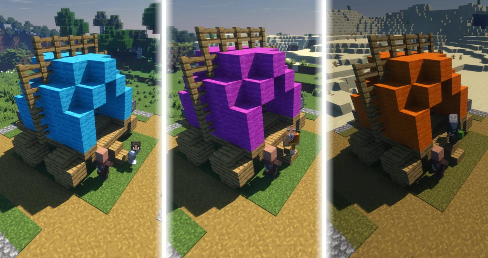
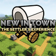

「生存系」 玩法是指 以在 Minecraft 世界中克服环境挑战、维持角色生命、获取资源并逐步发展为核心目标的一系列玩法。 其核心体验在于 在资源有限、存在生存威胁（如怪物、饥饿、环境伤害）的条件下，通过策略性决策、探索、战斗、建造和资源管理，实现从脆弱到强大的生存与成长历程。
生存系玩法是此服务器的主要玩法。其中一些分支已单独分离出来。
注意：该服务器未开启保留物品栏！死亡后可以立刻输入/dback或/back返回死亡点。
城镇建设
总览
你的目标是成立并建造一个模块化的城镇，然后防守下界的邪恶力量入侵，最终建立自己的下界堡垒并与敌人战斗！从一辆微不足道的马车出发，利用城市规划师的专业知识来建造定居点：矿井到木材厂，巫师塔到村民学院。随着城镇的发展，来自下界的入侵者将出现在附近并试图摧毁这一切。攻击将不断增强，最终强大的凋灵的出现会使这一切终结！
所有的建筑都是从一个披着工作台材质的发射器生成出来的，不需要手搭。
定居

获得任意一块原木后，会获得一本城镇宪章。手持城镇宪章可以预览马车的位置，在合适的地点点击书内的文字即可定居。
注意事项：
1.
创建后不能移动位置，创建在不合适的位置可能会导致发展困难以及无法触发特殊事件，请仔细斟酌。
2.
请适当与其他玩家的城镇保持较远的距离，以防生成不知道属于谁的特殊事件的结构。
3.
推荐合作，但其他玩家参与合作前不必再创建城镇。
4.
创建城镇前不影响原版玩法。
发育
根据游戏内教程即可。
大多数城镇建筑都需要建筑许可证。马车的箱子里提供了三个，城镇规划师可以卖给你更多。
建议优先建造矿场和木材厂，它们为定居者提供日常资源，存放在马车的漏斗。这有助于减轻你对石头和橡木原木的需求，当然可以额外建造刷石机和树场。一旦你建造了一个资源筒仓，你所有的矿场和木材厂的产量将翻倍，并从那时起被送到筒仓而不是马车的漏斗内。
其次可以建造宅基地，因为马车未免有点太简陋了。接下来你可以参照以下的顺序建造建筑。
1.
冒险工会
2.
农场地皮
3.
警卫塔
4.
下界神殿
5.
屠宰场
6.
巫师塔
这些模块有助于为城镇的每一步发展做好准备，直到发育的结束和反攻的开始。
之后，还有很多结构需要建造。新的结构可以满足玩家的需求，并随着游戏的继续提供更多的服务。
游玩建议：
1.
在马车的对面建家。
2.
提前规划好布局，提前平地。
3.
可以先完成原版发育。
注意事项：
1.
请不要破坏任何规划器和反应堆，不要杀死NPC，否则相应功能/模块会不可逆损坏。除了城镇规划师，其它NPC均没有复活的能力。
保卫与反击
随着每个模块的建立，来自下界的力量将以一次比一次强的强度进行攻击。完成保卫的奖励包括装备和原材料，如石头、原木甚至钻石套。此外，每次保卫都会奖励至少一个建筑许可证。
击败凋灵后，你可以进入下界进行发展，这开始了反攻的故事。大部分游戏玩法与前期，只不过你建造的是“下界要塞”。当你开始在下界建造要塞时，凋灵的各种基地将会被侦查出来，让你通过对发光的目标进行攻击。
每次进攻都会获得至少一颗凋灵之心，这是一个独特的物品，可以交易给你堡垒的战争策略师，换取金锭，为你对抗凋灵的战役提供资金。
反击会在传送门击败凋灵后结束，它将放弃并结束入侵计划，并且主世界的城镇规划师会获得末地传送门的配方。
当您此时首次进入末地时，原版游戏将照常进行。你应该杀死末影龙，然后通过传送门祭坛离开。当你回到没有活的末影龙的末地时（也就是说，其他人已经提前杀死末影龙了话，可能会直接开启剧情），凋灵对末地的入侵将开始。
请注意，不要在末地与其他玩家同时开启剧情，你应该提前在游戏内和QQ群内问一嗓子末地是否被占用。对于剧情冲突造成的意外，服主无能为力！
凋灵被杀后，所有参与的玩家都将收到难民计划，这是开始为末影人难民建造新家——末地城（不是小黑塔）的合同书。这些结构都是赛后福利，功能强大但建材昂贵。对于所有功能性的末地城结构，都需要一个凋灵轨迹，就像建筑许可证一样。凋灵轨迹只能在入侵期间通过杀死凋灵骷髅、烈焰人和凋灵获得，这意味着在单人游戏中，可以建造的最大结构数量为11个，具体取决于你在入侵期间的表现。
提示：有一种方法可以获得更多凋灵轨迹——所有的剧情中都强烈暗示了这一点，包括末地城的配方书，但它旨在作为游玩时的惊喜和奖励，所以它是保密的。
特殊结构
当你定居后，四个独特的建筑会在世界上生成。这些自然生成的结构的特征是不依赖于特殊的生物群系或方块，而是在定居者马车的方圆300格内随机分布，但不会在方圆60格内生成。这保证了每个玩家都可以找到所有4个结构，并且可以建造他们各自的建筑或堡垒。最容易找到的是浮岛，它看起来像袖珍版末地城。就砂岩日晷、炼狱和哈罗德的笼子而言，通过寻找由蜘蛛网制成的“X”形状的标记来更容易找到它们，这些蜘蛛网会出现在天空中。
您还可以通过从城镇规划师那里购买城堡许可证来建造城堡。每个定居点仅有且精确提供6个城堡许可证，这些许可证可用于以您想要的任何方向建造六个城堡框架。第一个框架配有一个侍从，他将提供将框架升级为最多七个厢房的配方。所有这些，与城镇一样，都是完全模块化的。
数据包信息
数据包名称：New in Town
作者：kanokarob
下载链接：
New in Town | The Settler's Experience Data Pack - Minecraft Data Pack
A multi-stage, story-driven, settler's experience, where you are tasked with founding, building up, and defending a modular settlement from the forces of the Nether, then taking the fight to them as you construct your own Nether Fortress!
 https://modrinth.com/datapack/new-in-town
https://modrinth.com/datapack/new-in-town
总之，祝你好运！
烹饪食艺
在远古建造师的时代，有一个城镇，住着一位名叫Josh的大厨。他开创了Minecraft食品技艺的先河，他的菜肴受到广泛好评，世世代代地流传下来。这种味道深深地刻进了方块人的DNA，即使这个名叫“新的世界”的世界受到两次前所未有的冲击，他的菜肴的配方书仍能被幸存的方块人默写下来。
顾名思义，烹饪书包括所有食物的食谱。
除了需要合成烹饪书，还需要制作一个烹饪站以制作食材。
你可能还需要用到一些刀具。
不同食物具有不同的效果。然而论实用性和经济性，不如金胡萝卜。
最后编辑于2025年7月25日